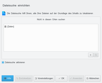
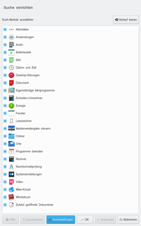

Baloo
Dieser Artikel wurde für die folgenden Ubuntu-Versionen getestet:
Ubuntu 16.04 Xenial Xerus
Ubuntu 14.04 Trusty Tahr
Zum Verständnis dieses Artikels sind folgende Seiten hilfreich:
Baloo  ist ein Dienst, welcher unter dem KDE Plasma Desktop zur Dateiindizierung und -suche verwendet wird. Baloo bringt dabei ein Framework mit, welches Suchergebnisse präsentieren kann. Er ersetzt den Vorgänger Nepomuk und bietet für eine Übersicht über bereits portierte Programme. Baloo ist aber keine 1:1 - Ersetzung dessen, sondern bietet im Gegensatz zu Nepomuk keine zentrale Datenbank auf Basis von RDF zur Ablage an, sondern speichert Daten in dezentralisierten Plugins.
ist ein Dienst, welcher unter dem KDE Plasma Desktop zur Dateiindizierung und -suche verwendet wird. Baloo bringt dabei ein Framework mit, welches Suchergebnisse präsentieren kann. Er ersetzt den Vorgänger Nepomuk und bietet für eine Übersicht über bereits portierte Programme. Baloo ist aber keine 1:1 - Ersetzung dessen, sondern bietet im Gegensatz zu Nepomuk keine zentrale Datenbank auf Basis von RDF zur Ablage an, sondern speichert Daten in dezentralisierten Plugins.
Die drei Kern-Plugins sind derzeit Datenspeicher (Data Stores), Suchspeicher (Search Stores) und Beziehungen (Relations). Diese Unterteilung erlaubt Stichwörter, Suchbegriffe und Zusammenhänge unabhängig von den Original-Daten zu speichern und somit permanent im Datenspeicher zur Verfügung zu stellen.
Die "TagRelations" verbinden dabei Daten aus verschiedenen Quellen. So wird es beispielsweise möglich, von Akonadi bereitgestellte - und auch weiterhin verwaltete - PIM-Daten mit lokalen Dateien aus dem Dateisystem zu verknüpfen.
Gespeichert werden die Informationen in einer Kombination zwischen Xapian und SQLite. Xapian ist eine Suchmaschinenbibliothek, welche unter der GPL v2+ veröffentlich wurde.
Installation¶
Unter dem KDE Plasma Desktop ist baloo bereits vorinstalliert und aktiviert. Zur Installation des Paketes kann das Metapaket baloo installiert werden.
baloo (universe)
 mit apturl
mit apturl
Paketliste zum Kopieren:
sudo apt-get install baloo
sudo aptitude install baloo
Vorgehensweise¶
Baloo macht sich selbst zur Aufgabe mit möglichst wenig Speicherbedarf eine extrem schnelle Suche zu gewährleisten. Ebenfalls werden zusätzliche Metadaten durch die Erweiterung von Dateiattributen ermöglicht. So können beliebige Dateien mit weiteren Schlagworten und auch Kommentaren versehen werden.
Baloo baut dabei einerseits auf einen Datenspeicher, so wie auf einen Suchspeicher auf. Der Datenspeicher kann ein freies Format und eine freie Schnittstelle (API) haben, so dass für die entsprechenden zu speichernden Daten die jeweils beste Speicherform gewählt werden kann.
Der Suchspeicher wird mittels Plugins realisiert, dessen Sucheigenschaften speziell auf festgelegte Datentypen ausgerichtet sind. Standardmäßig bringt Baloo drei Plugins für folgende Typen mit:
Dateisuche
Emailsuche
Kontaktsuche
Auch hier kann jedes Plugin seine eigene API mitbringen.
Benutzung¶
Baloo ist kein Programm im eigentlichen Sinne, sondern bietet eine Schnittstelle für andere Programme, die die Ergebnisse präsentieren. Beispielhaft wären dafür der KRunner und Dolphin zu nennen. Ebenso gibt es Milou, welches als Plasmoid-Suchschnittstelle einsetzbar ist.
Eine manuelle Suche, auch zur Eingrenzung von Fehlern, kann wie in den folgenden Abschnitten erklärt, realisiert werden:
balooshow¶
Balooshow zeigt Informationen über die ausgewählte Datei. Allgemeine Syntax:
balooshow [OPTIONEN] Datei
Beispiele:
balooshow Bilder/Beispielbild.png
Keine Indexinformationen gefunden
bedeutet, diese Bild wurde noch nicht indiziert.
balooshow Bilder/Beispielbild.png
36048747142053933 45 8393253 /home/user/Bilder/Beispielbild.png
Breite: 1920
Höhe: 1080Ausgabe nach der Indizierung, welche durch balooctl index Bilder/Beispielbild.png gestartet wurde.
baloosearch¶
Baloosearch ist das Kommandozeilen-Tool für die Suche. Alle indizierten Dateien lassen sich damit per Stichwortsuche finden.
Die allgemeine Syntax lautet:
baloosearch [OPTIONEN] ABFRAGE
Anwendungsbeispiele¶
Hier dient als Beispiel die tag-Suche. Verwendet man, z.B. unter Dolphin, die Funktion "Stichwörter hinzufügen", landen diese in der Datei-Datenbank. Um gezielt nach diesen zu suchen bietet sich der Parameter //?query=EIGENSCHAFT: an. Mit diesem lassen sich gezielt Stichworte, Dateinamen, Künstler, etc. suchen und die damit gekennzeichneten Dateien ausgeben.
baloosearch //?query=EIGENSCHAFT:SUCHBEGRIFF
Der Suchbegriff ist "case-insensitiv" (heißt, Groß-/Kleinschreibung wird ignoriert), kann dabei mit dem Asterisk(*) vervollständigt werden, aber nicht als genereller Joker verwendet werden. Es muss mindestens der Anfangsbuchstabe vorgegeben werden und nach dem Asterisk darf kein Zeichen mehr folgen. Die Verknüpfung von mehreren Suchbegriffen wird mittels OR oder AND realisiert.
Einige Beispiele:
#Suche nach Stichwort baloosearch //?query=tag:Urlaubsbild #Suche nach Stichwort und Breite baloosearch //?query=tag:Urlaubsbild AND width:100 #Suche nach mehreren Stichworten baloosearch //?query=tag:Urlaubsbild AND tag:Familie #Suche nach Künstler UND Stichwort laut baloosearch //?query=artist:Iron* AND tag:laut #Suche nach allen Künstlern, die mit A beginnen und baloosearch //?query=artist:A* AND title:B* #Suche nach Künstler und Genre baloosearch //?query=artist:M* AND genre:Hörbuch
Einstellungen¶
per GUI¶
Mit der grafischen Oberfläche lassen sich absichtlich nur wenige Einstellungen vornehmen.
 In der Dateisuche können Ordner aus der Indizierung ausgeschlossen werden.
 Die Plasmasuche beinhaltet alle einstellbaren Such-Module.
Konfigurationsdatei¶
Baloo nutzt Konfigurationsdateien pro Benutzer, so dass sich die jeweilige Datei unter ~/.config/baloofilerc befindet. KDE4-Benutzer finden diese hingehen unter ~/.kde4/share/apps/config/baloofilerc. Zur Konfiguration bietet Baloo das Werkzeug balooctl an.
| Option | Beschreibung |
| [BasicSettings] | |
| Indexing-Enabled=true | Der Dienst ist aktiv, nutzt false zum deaktivieren des Dienstes |
| [General] | |
| first run=false | Falls diese Variable auf true gesetzt wird, beginnt die Indizierung erneut. Sollte nur im Falle einer Datenbanklöschung benutzt werden! |
| exclude filters=autom4te,...,core-dumps | Hier können Filter für Dateien gesetzt werden, die nicht indiziert werden sollen. |
| exclude mimetypes=text/plain, image/png | Hier können Filter für Mimetypen gesetzt werden, die nicht indiziert werden sollen. |
| exclude folders[$e]=$HOME/IndizierMichNicht/,$HOME/Mich/Auch/Nicht/ | Kommaseparierte Liste von gesamten Ordnern, die nicht indiziert werden sollen. |
| folders[$e]=$HOME/ | Die hier angegebenen Ordner werden rekursiv indiziert. Standard ist das Homeverzeichnis des Nutzers. |
| only basic indexing=true | Ist dieser Wert wahr, werden ausschliesslich Dateinamen indiziert. |
| index hidden folders=true | Versteckte Ordner werden ebenfalls indiziert. Sollen nur einzelne versteckte Ordner indiziert werden, ist die Option folders[$e] vorzuziehen. |
balooctl¶
Balooctl ist das Kontrollprogramm für Baloo. Es bietet verschiedene Möglichkeiten die Konfiguration auf der Kommandozeile einzustellen oder Informationen abzufragen.
Allgemeine Syntax:
balooctl [Optionen] ARGUMENTE
mögliche Argumente:
| Befehl | Beschreibung |
| status | Status der Indizierung anzeigen |
| enable | Datei-Indizierung aktivieren |
| disable | Datei-Indizierung deaktivieren |
| start | Datei-Indizierung starten |
| stop | Datei-Indizierung beenden |
| restart | Datei-Indizierung neustarten |
| suspend | Datei-Indizierung aussetzen |
| resume | Datei-Indizierung wieder aufnehmen |
| check | Nach nicht indizierten Dateien suchen und indizieren |
| index | Angegebene Dateien indizieren |
| clear | Angegebene Dateien nicht mehr indizieren |
| config | Baloo-Einrichtung bearbeiten |
balooctl config¶
Die Option balooctl config bietet folgende Optionen:
| Befehl | Beschreibung | Beispiel |
| add | Fügt den Wert eines Einrichtungs-Parameters hinzu. Im Beispiel wird der Pfad /var/log indiziert. | balooctl config add includeFolders /var/log/ |
| rm | remove | Entfernt den Wert eines Einrichtungs-Parameters. Im Beispiel wird der obige Eintrag wieder entfernt. | balooctl config remove includeFolders /var/log |
| list | ls | show | Zeigt den Wert eines Einrichtungs-Parameters | balooctl config ls includeFolders |
| set | Setzt den Wert eines Einrichtungs-Parameters. Im Beispiel wird die Indizierung versteckter Orte erlaubt. | balooctl config set hidden true |
Problembehebung¶
Datenbanken löschen¶
Balooctl bietet die Option clear an, mit der gezielt Daten gelöscht werden können. Sollte eine komplette Löschung aller erfassten Daten erfolgen, so findet man diese im Verzeichnis .local/share/baloo. Nach dem manuellen Beenden des Dienstes mittels balooctl disable können diese mittels
rm -rf .local/share/baloo
komplett vernichtet werden. Danach sollte man die Option first run in der Konfigurationsdatei auf true setzen, um einen fehlerfreien Betrieb zu gewährleisten. Mit balooctl enable wird Baloo anschließend wieder reaktiviert..
baloo_file benötigt 100% CPU¶
Die Indizierung der Dateien benötigt beim ersten Start - oder nach dem Neuaufbau der Informationen - sehr viel Rechenleistung. Für gewöhnlich dauert dieser Vorgang nur einige Minuten. Sollte dieser jedoch länger anhalten, kann ein Neuaufbau der Datenbank helfen. In jedem Fall sollte ein Fehlerbericht unter bugs.kde.org eingereicht werden.
baloo hängt bei einer Datei¶
Sollte die Indexierung bei einer einzelnen Datei hängen, so kann man diese mit
qdbus org.kde.baloo /fileindexer org.kde.baloo.fileindexer.currentFile
ermitteln.
- Erstellt mit Inyoka
-
 2004 – 2017 ubuntuusers.de • Einige Rechte vorbehalten
2004 – 2017 ubuntuusers.de • Einige Rechte vorbehalten
Lizenz • Kontakt • Datenschutz • Impressum • Serverstatus -
Serverhousing gespendet von